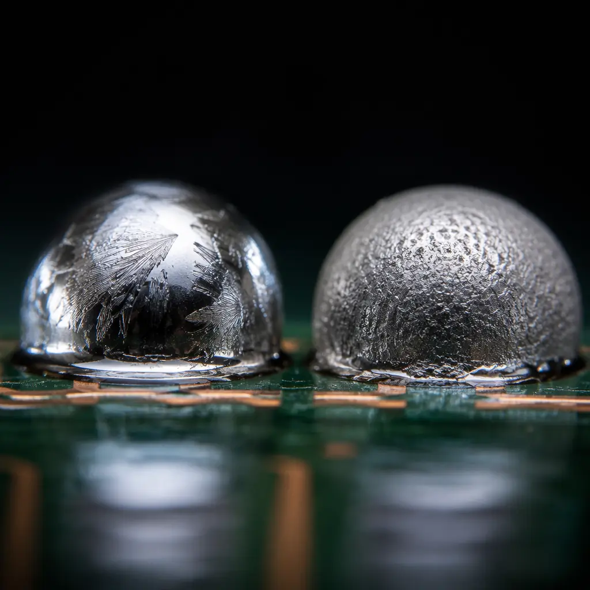
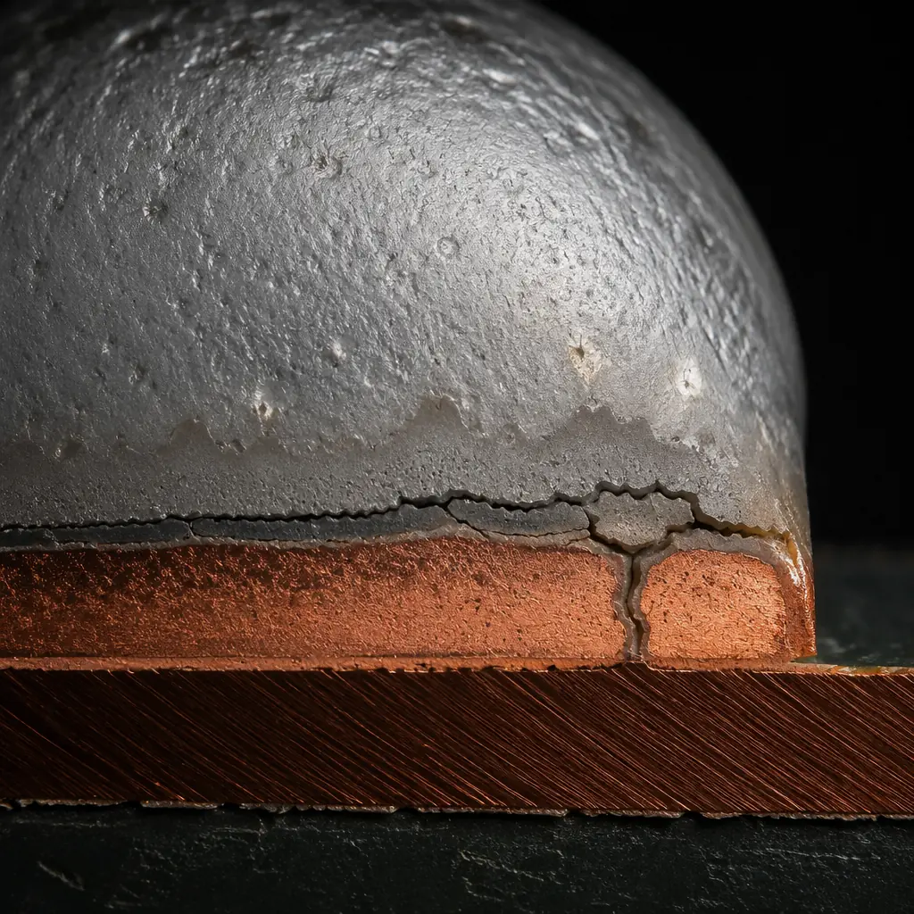
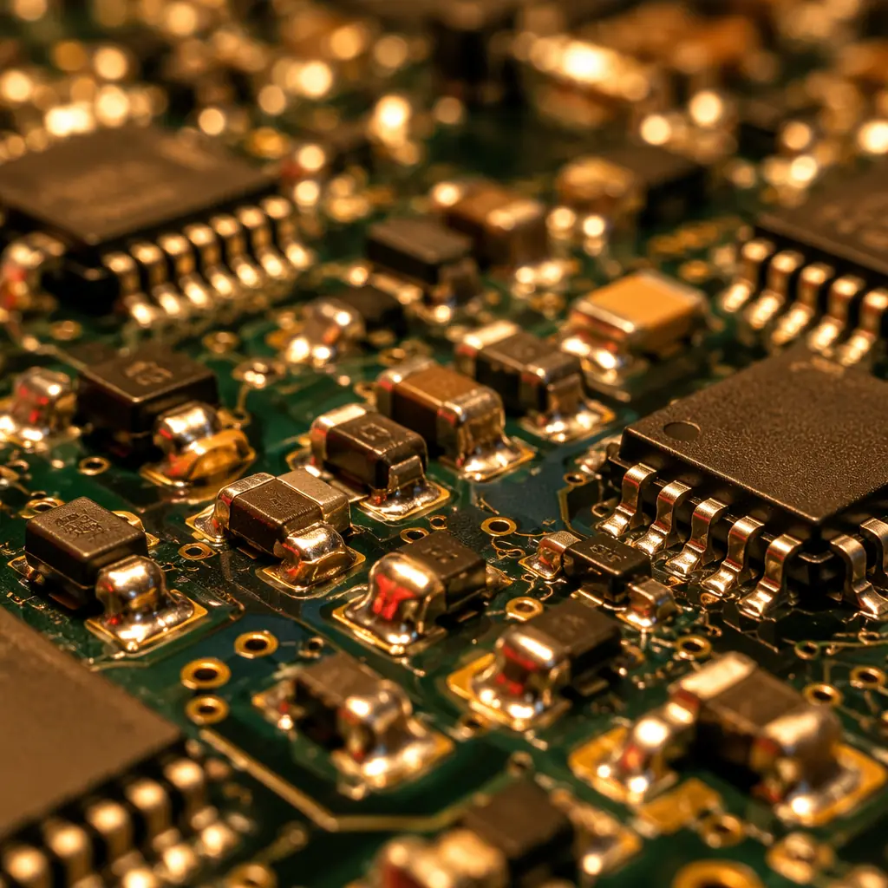

The solder alloy decision is one of the few PCB assembly choices that simultaneously affects regulatory compliance, long-term reliability, and per-board cost. Since the EU RoHS directive took effect in 2006, the industry has accumulated nearly two decades of field data on lead-free solder performance — and the picture is more nuanced than most procurement guides acknowledge. Lead-free isn't simply "worse" or "better" than traditional SnPb; it performs differently under specific stress conditions, and understanding those differences is what separates reliable products from field failures.
At Huaxing PCBA, we run both lead-free and leaded SMT lines across 8 high-speed production lines, processing over 8 million solder joints per day. Our quality team has analyzed thousands of X-ray and cross-section samples from both alloy families. This article draws on that production data, published reliability studies, and IPC-9701 thermal cycling standards to give procurement managers and design engineers a clear, data-backed comparison.

Alloy Composition and Melting Behavior
The fundamental difference between lead-free and leaded solder begins with chemistry — and that chemistry drives every downstream decision about reflow profiles, component compatibility, and inspection criteria.
Sn63Pb37 (Tin-Lead Eutectic) — The Baseline
Melts sharply at 183°C with a single-phase transition. This eutectic behavior means SnPb goes directly from solid to liquid with no pasty range, producing smooth, predictable fillets. Peak reflow temperature typically runs at 205–220°C. The alloy has been studied for over 50 years; its failure modes, intermetallic growth rates, and grain structure evolution are exhaustively documented. SnPb remains legal for military, aerospace, medical implant, and automotive under-hood applications where exemptions apply.
SAC305 (Sn96.5Ag3.0Cu0.5) — The Industry Workhorse
Melts at approximately 217–220°C, roughly 34°C higher than SnPb. Unlike SnPb, SAC305 is near-eutectic — it has a narrow pasty range of about 3°C. The higher melting point forces peak reflow temperatures to 235–250°C, which stresses moisture-sensitive components and thin substrate laminates. On the plus side, SAC305 joints show superior tensile strength (approximately 45 MPa vs 35 MPa for SnPb at room temperature) and better creep resistance. Over 85% of RoHS-compliant consumer and industrial electronics worldwide use SAC305 or its close variants.
SN100C (SnCuNi) and Low-Silver Alternatives
SN100C (Sn-0.7Cu-0.05Ni) melts at 227°C and eliminates silver entirely, reducing raw material cost by 30–40% vs SAC305. The nickel addition stabilizes the intermetallic layer and produces a glossy post-reflow appearance that some OEMs prefer for cosmetic consistency. However, the higher melting point (10°C above SAC305) increases thermal stress further, and wetting performance on oxidized pads is measurably weaker — typically requiring nitrogen atmosphere reflow for acceptable results.
Procurement Reality: If your product ships to the EU, you need lead-free. If it's for US military (MIL-PRF-38534) or NASA Class 3, you may still use SnPb under exemption. Don't guess — check the specific regulation that applies to your end market before committing to an alloy.
Reliability: Thermal Cycling and Intermetallic Growth
The reliability question is where most of the industry debate lives. SAC305 joints are mechanically stronger at room temperature, but under thermal cycling (−40°C to +125°C), the picture reverses in some conditions.
| Reliability Parameter | SnPb (Sn63Pb37) | SAC305 | SN100C |
|---|---|---|---|
| Tensile Strength (RT) | ~35 MPa | ~45 MPa | ~38 MPa |
| Creep Resistance (100°C) | Poor | Good | Moderate |
| −40/+125°C Thermal Cycles to 50% Failure (BGA, daisy chain) | ~3,500 cycles | ~2,800 cycles | ~2,400 cycles |
| 0/+100°C Thermal Cycles to 50% Failure | ~6,000 cycles | ~8,500 cycles | ~7,200 cycles |
| IMC Thickness After 1,000h at 150°C | ~3.5 μm | ~2.8 μm | ~2.2 μm |
| Drop-Shock Reliability (JEDEC JESD22-B111) | Excellent | Moderate | Good |
This table explains why the industry has a split personality about lead-free reliability. SAC305 outperforms SnPb in moderate-temperature cycling (0–100°C) — which covers most consumer and industrial environments — but under wide-temperature-range cycling (−40/+125°C, typical of automotive under-hood and aerospace), SnPb's superior ductility and slower intermetallic growth at extreme cold gives it the edge. The failure mechanism in SAC305 under wide-range cycling is predominantly interfacial fracture at the IMC-solder boundary, driven by CTE mismatch between the solder, intermetallic layer, and copper pad.

Tin Whiskers: The Lead-Free Wildcard
Pure tin finishes — including the tin-rich SAC alloys — are susceptible to tin whisker growth: microscopic, conductive filaments that spontaneously grow from tin surfaces and can bridge adjacent pads, causing short circuits. This is not a theoretical problem. A 2018 NASA study documented whisker-induced failures in commercial satellite power supplies; the culprit was pure-tin-plated component leads that had been flagged during incoming inspection but were processed anyway.
Whisker formation is driven by compressive stress in the tin plating, typically from intermetallic growth at the Cu-Sn interface. SnPb finishes resist whiskering because lead atoms disrupt the grain boundary stress gradient. For lead-free assemblies, the proven mitigation strategies include:
Matte Tin with Annealing (150°C for 1 hour within 24h of plating)
Post-plate annealing relieves internal stress in the tin grain structure. This is the most widely adopted mitigation method in the industry and is specified by component manufacturers like Texas Instruments and Analog Devices for their lead-free IC packages.
Conformal Coating (≥50 μm Acrylic or Parylene)
A continuous coating physically contains whisker growth. The coating must be thick enough that a whisker cannot penetrate it — 50 μm is the widely cited minimum. For space-grade hardware, parylene C at 75–100 μm is the standard. See our conformal coating guide for application details.
Nickel Underplate Barrier (Minimum 1.27 μm)
A nickel barrier between the copper substrate and tin finish suppresses Cu-Sn intermetallic growth, which is the primary compressive stress driver. This is standard for high-reliability applications and is required by GEIA-STD-0005-2 for aerospace lead-free electronics.
Key Takeaway: Tin whisker risk is real but manageable. For commercial electronics (consumer, industrial, automotive cabin), matte tin with standard annealing is adequate. For high-reliability applications (medical implant, aerospace, defense), add conformal coating or nickel underplate — or retain SnPb under exemption if your contract allows it.
Manufacturing Cost Comparison
Procurement managers typically focus on raw material cost — and on that metric alone, SnPb wins. But the total cost picture is more complex once you account for energy, nitrogen consumption, and scrap rates.
| Cost Factor | SnPb Assembly | SAC305 Assembly | Delta |
|---|---|---|---|
| Solder Paste Cost per kg | ~$45 | ~$95 | +111% |
| Reflow Energy per Panel | Baseline | ~+12% | Higher peak temp |
| Nitrogen Requirement | Optional | Recommended | ~$0.03/board |
| Component Cost Premium | None | +5–15% for lead-free parts | Varies by package |
| Scrap Rate (well-controlled process) | ~0.3% | ~0.5% | Narrower process window |
| Rework Difficulty | Easier | Harder | Higher preheat needed |
For a typical 4-layer PCB with 200 SMT components, the total per-board cost difference between SnPb and SAC305 is roughly $0.18–$0.35, or about 3–6% of total assembly cost at medium volume. The premium is mainly in paste cost and component sourcing — not in process overhead.
Mixed Assembly: When One Board Needs Both Alloys
A common scenario: a design uses mostly SAC305 BGA and QFN packages but has a few legacy through-hole connectors only available with SnPb-plated leads. This creates a mixed-alloy assembly, and the reliability implications are not trivial.
The primary concern is low-temperature phase formation. When SAC305 and SnPb mix in a solder joint, the resulting alloy can have a melting point as low as 176°C — below both SAC305 and SnPb individually. This low-melting phase concentrates at the joint interface and becomes the weak point under thermal cycling. IPC-A-610 allows mixed assembly for Class 1 and 2 products, but recommends against it for Class 3 unless validated with thermal cycling data. If mixed assembly is unavoidable, our engineering team at Huaxing PCBA recommends:
Verify Complete Melting of the Higher-Temperature Alloy
SAC305 must reach full liquidus during reflow — a peak temperature of ≥235°C at the joint. For mixed assemblies, profile thermocouples should be placed on the SAC305 BGA balls, not just on the board surface. X-ray inspection post-reflow (see our BGA assembly guide) should confirm full ball collapse.
Run Accelerated Life Testing on First Articles
For any mixed-alloy design going into production, thermal cycling per IPC-9701 (−40/+125°C, 500 cycles minimum) on first-article boards is the only reliable way to validate joint integrity. Cross-section at 0, 250, and 500 cycles to track IMC thickness and crack initiation.
Consider Solder Paste Selection Carefully
Using SAC305 paste with SnPb component leads produces a different joint composition than using SnPb paste with SAC305 BGA balls. The former (SAC paste + SnPb lead) tends to produce less low-temperature phase because the bulk paste dominates joint volume. Discuss with your turnkey assembly partner before locking the BOM.
Decision Framework: Which Alloy for Which Application
After two decades of industry transition, clear patterns have emerged for which applications suit each alloy family. Use this decision matrix as a starting point, not a rule — always validate with your specific reliability requirements.
| Application | Recommended Alloy | Rationale |
|---|---|---|
| Consumer electronics (phones, laptops, TVs) | SAC305 | RoHS mandatory in EU/China; moderate thermal range; cost-sensitive |
| Industrial controls (PLC, motor drives) | SAC305 | Long service life at stable temperature; SAC305 creep resistance advantage |
| Automotive cabin (infotainment, body control) | SAC305 | RoHS applies; −40/+85°C range within SAC comfort zone |
| Automotive under-hood (ECU, ABS, transmission) | SnPb or SAC305 + mitigation | ELV exemption allows SnPb; wide thermal range favors ductility |
| Medical implantable (pacemakers, neurostim) | SnPb (exemption) | Tin whisker risk unacceptable; field reliability paramount |
| Aerospace / Defense | SnPb (MIL-PRF-38534) | Whisker risk in vacuum; extreme thermal cycling |
| Telecom infrastructure (5G base stations) | SAC305 or SN100C | Outdoor thermal cycling; SAC305 creep resistance at elevated ambient |
| LED lighting (outdoor) | SAC305 | Constant elevated temperature; SAC305 intermetallic stability |

Summary: Data Over Dogma
The lead-free transition generated enormous debate, much of it shaped by early-adopter pain rather than mature-process data. Today, SAC305 assembly on well-controlled SMT lines with proper thermal profiling produces joints that equal or exceed SnPb reliability for most applications — with the clear exceptions of extreme thermal cycling and tin whisker-sensitive environments.
The decision should be driven by three factors in order: (1) regulatory requirement — if your market demands RoHS, the discussion is over; (2) operating environment — wide thermal range or vacuum = SnPb still has the data advantage; and (3) total cost, including the cost of a potential field failure multiplied by its probability. For the vast majority of commercial and industrial products shipping in 2026, SAC305 with standard whisker mitigation is the right choice.
At Huaxing PCBA, we support both alloy families across dedicated SMT lines — our SnPb and lead-free processes are physically separated to eliminate cross-contamination risk. Our reflow profiling uses 12-zone ovens with thermocouple monitoring at every joint type, and we maintain IPC-A-610 Class 3 certified inspectors on every shift. Read our full assembly process guide or review our certifications to evaluate whether we're the right partner for your next project.